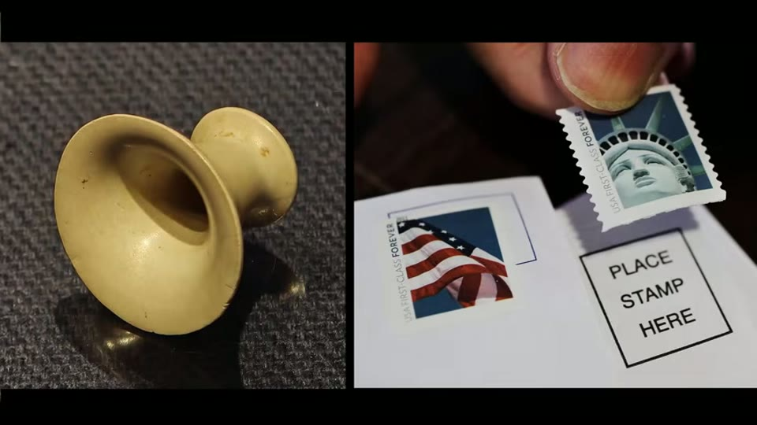
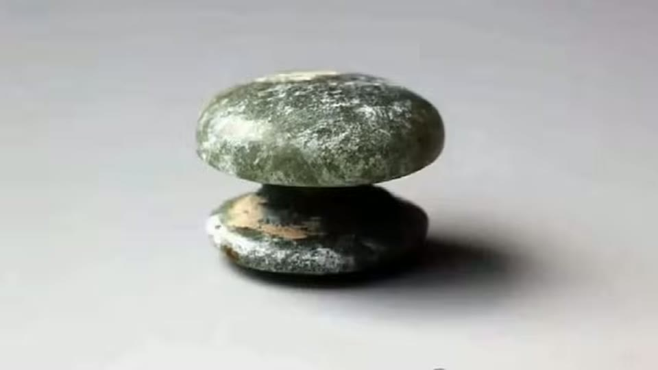
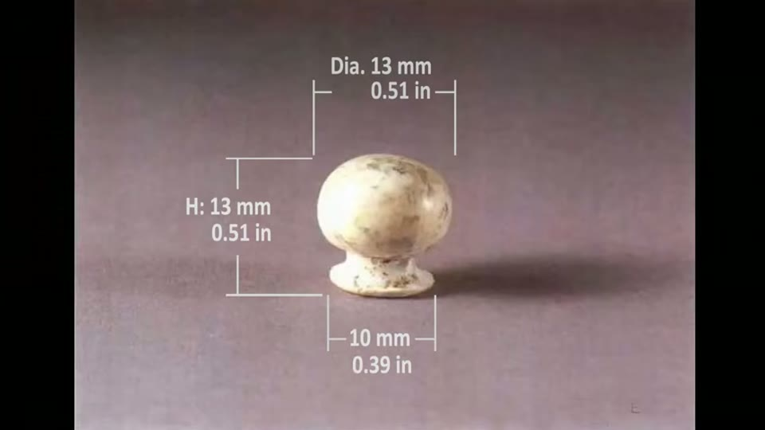
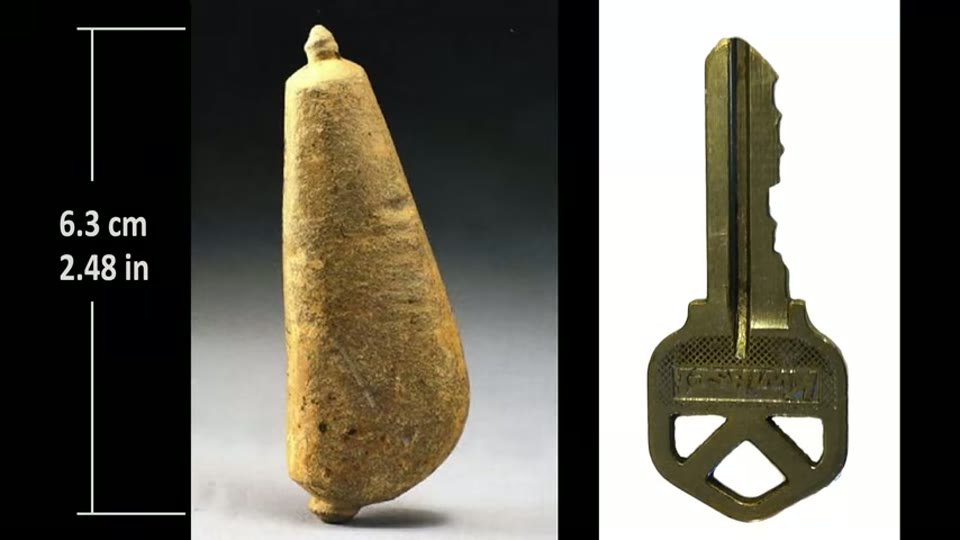
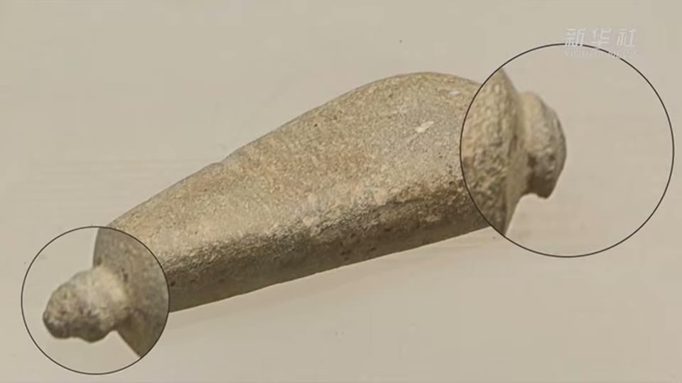
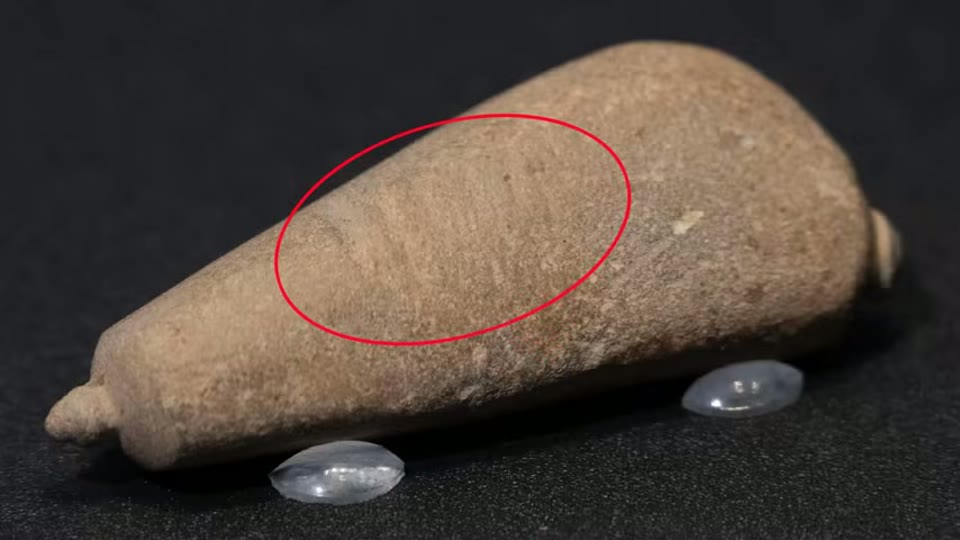

Curious Being
Lost Prehistoric Engineering: The Mystery of the 0.5mm Jade Artifact
Tina · 18 min · watch on YouTube · summarised 2026-08-23
The object is about half an inch tall and two thirds of an inch wide, roughly the size of a thumbnail, and its thinnest walls are half a millimetre thick — the thickness of a postage stamp 00:00–00:35. It is nephrite jade, one of the hardest materials worked in the ancient world, cut about 5,000 years ago by people with no metal tools of any kind. These are excavated objects from Neolithic tombs in China, not collectors' pieces.
The shape is a flared bell, like the end of a trumpet, tapering to a flat base pierced by a central hole.

Walls half a millimetre thick, in nephrite, on an object the size of a thumbnail.
What they were
The identification comes from where they were found rather than from the objects themselves 01:30–03:05. Of more than 1,200 excavated Neolithic tombs, these pieces appear in only eight — and in every one of the eight they were found in pairs, one either side of the skull, exactly where ear ornaments would sit. They are read as ear studs: the central hole threads through the lobe, the bell faces outward.
All eight are large tombs with abundant offerings. In a culture producing jade knives and bi discs in quantity, these were never mass-produced — fewer than 1% of burials contain them.
The design has a lineage, and that is the argument
The bell shape is presented as the end point of a sequence rather than a sudden appearance 03:50–06:35.
The earliest ear ornaments were wood, bone and clay — materials that shape easily and forgive mistakes. Once jade working was established, jade took over as the prestige material.
- Solid dumbbells, around 3800–3300 BC: a narrow central shaft worn through the piercing, some carved from translucent crystal and polished to a glassy finish. Exquisite, and heavy for their size.
- The mushroom form: a rounded top, a slender shaft, a flat circular base, milky and semi-translucent, roughly the size of half a bottle cap. More refined, still solid, still heavy against the earlobe for long wear.
- The hollowed mushroom — the conceptual step 05:45–06:35. Someone realised the inside did not need to exist. From outside, identical to the solid version; inside, a different technical achievement entirely. Thin walls cut the mass and made the ornament wearable.
- The trumpet bell is that principle taken to its limit: the flare removes more material again, the walls are thinned as far as the stone will tolerate, and the central hole lets beads, feathers or flowers be threaded through.


The bell shape is the end of a sequence - solid, then lightened, then hollowed - rather than an object that appears without precedent.
The tool
The answer she offers was excavated from a Lingjiatan tomb 07:45–08:30: a dual-ended stone drill made of sandstone, 6.3 cm long, about the length of a house key. One end carries a slightly thicker bit with a flattened tip, about the diameter of a pencil-top eraser; the other a finer bit with a sharp point.


The tool the explanation rests on: a dual-ended sandstone drill excavated from a Lingjiatan tomb.
Under magnification it shows two things.
Spiral and concentric wear on both bit ends. In lithic use-wear analysis — the study of macroscopic traces on stone tools — these patterns are treated as diagnostic of one motion: sustained rotary drilling. The tool was spun rapidly and repeatedly against hard stone over long periods.
Horizontal wear grooves around the central shaft, running perpendicular to its length. These are not made by drilling. They are made by something wrapped around the shaft moving back and forth: a cord. The drill was not turned by hand, it was the spindle of a bow drill.

Grooves running around the shaft rather than along it - made by a cord, which is what identifies the tool as a bow drill spindle rather than a hand-turned drill.
She notes that Egyptian bow drills have been found with the same horizontal friction marks on their wooden spindles 09:44–10:20 — the same mechanical solution reached independently, a cord and bow converting linear motion into rotation.
Why this particular drill explains this particular object
The detail the video turns on 10:45–11:45: the drill is not symmetrical. Both bit ends are aligned with each other, but both are offset from the centre of the shaft. She argues this is a design choice rather than a manufacturing flaw.
A bit rotating about an axis that is not centred on its cutting point does not cut a straight cylinder. The off-centre motion sweeps an arc wider than the bit itself, and the cavity it opens flares as it deepens — a bell mouth rather than a tube. That is the interior profile of the earring.

The geometric step the whole explanation turns on: a bit rotating off-centre sweeps an arc wider than itself and opens a cavity that flares with depth.
Two apparent objections she turns into support:
- The bit is smaller than the earring's opening. That is what an offset bit does — the swept arc is wider than the bit occupies.
- The drilling rate is desperately slow, typically 1–3 mm of depth per hour in hard nephrite, with an abrasive slurry of hard mineral sand and water doing the actual cutting. She argues the slowness is what makes the result possible: at that rate the craftsman can monitor wall thickness continuously, adjust pressure and angle in real time, and stop the moment the material reaches its minimum safe thickness. Remaining irregularities were polished out afterwards.
Her summary of what this implies 13:20–14:40: a formal workshop with designated production spaces and specialised tools for different stages; a working knowledge of the material's hardness, fibrous structure and behaviour under abrasion sufficient to take it to half a millimetre without failure; a mechanical drilling technology capable of producing controlled flared geometries in hard stone; and a social system in which fineness and miniaturisation communicated status.
What she leaves open
The closing section is unusually explicit about the limits 15:00–17:10. Fewer than 1% of the excavated burials contain these objects. No craftsman is named, and none ever will be. How the knowledge passed — parent to child, master to apprentice, or dying with its last holder — is unknown. Whether the eight pairs are all that were ever made, or a fraction of a much larger number lost to looting and decay, is unknown.
What you can check yourself
- The drill exists and is measurable: 6.3 cm, sandstone, two working ends, and the offset between the bit axes and the shaft is a physical property anyone can verify from the object or a scaled photograph.
- Whether an off-centre rotating bit produces a flared cavity is not an archaeological question at all. It is geometry, and it can be demonstrated on any soft material in an afternoon.
- Spiral and concentric wear as diagnostic of rotary motion is standard lithic use-wear analysis, with a published literature.
- The horizontal cord grooves on the shaft, and the matching marks on Egyptian bow drill spindles, are a direct photographic comparison.
- The 1–3 mm per hour drilling rate in nephrite comes from replication work and can be repeated.
- The find distribution — eight tombs of more than 1,200, ornaments always paired beside the skull — is in the excavation reports.
- The wall thickness is a caliper measurement on a real object in a real collection.
What the video does not settle
- The geometric claim is illustrated with a diagram of a different tool. The frame that carries the offset argument is a stock engineering diagram headed Drill bit radial runout, showing a modern steel twist drill wobbling off its ideal axis. The excavated stone drill does not appear in it, and no flared cavity in jade is shown anywhere. Runout in a modern drill is a defect; the claim here is a deliberately offset bit, and the two are not the same thing even though both sweep a cone.
- No replication is reported. The offset drill explains the geometry, and geometry is the strong part — but nobody in this video makes a trumpet-bell earring, or even a flared cavity in nephrite, with a copy of the tool. Until someone does, the mechanism is well-argued rather than demonstrated.
- The drill is not shown to have been used on an earring. It comes from a Lingjiatan tomb; the connection to these specific objects is inference from shape, not from residue, wear matching, or a find association.
- How the outside was shaped is never addressed. The whole account concerns the interior cavity. The flared exterior profile, the flat base and the thinning of the walls to an even half millimetre are left to "subsequent polishing stages".
- The wall thickness is the hard part and it is glossed. Being able to open a flared hole slowly does not by itself explain arriving at 0.5 mm without breaking the piece, repeatedly, in a fibrous stone.
- The culture attribution is inconsistent. The tombs are introduced as Liangzhu, and the same 1,200-tomb figure is later attributed to Lingjiatan sites, while the drill is from Lingjiatan. These are two distinct cultures and the video does not distinguish them, so which culture made the earrings is genuinely unclear from this account.
- No figures for how many earrings — eight tombs and eight pairs are stated, but the total known corpus is not given, nor how many are complete.
See also
China's Impossible Jade Discs: A Neolithic Engineering Mystery — the same jade cultures, the same abrasive principle, and the workshop evidence that this video assumes.
- What Were These 5,000-Year-Old Jade Tubes Really For? — six weeks earlier, and it ends by promising this video. There she says the horse hoof jades need no lost technology; here she turns to the jade artefacts she says do still raise unanswered questions. She separates the explained from the unexplained and says which is which.
What we have not checked
- Which culture made these earrings is unresolved in the video itself. The tombs are called Liangzhu at the start and Lingjiatan at the end, with the same 1,200-tomb figure attached to both. Lingjiatan (Anhui, roughly 3800–3300 BC) and Liangzhu (lower Yangtze, roughly 3300–2300 BC) are different cultures. Nothing should be repeated from this entry that depends on which one is meant.
- The stated 5,500-year date for Liangzhu sits awkwardly with the 3300–2300 BC range she gives for it in her jade discs video, which is another symptom of the same confusion.
- The dual-ended drill's find context, catalogue number and publication are not given, and the object has not been located independently.
- The 1–3 mm per hour drilling rate, the 6.3 cm drill length and the 0.5 mm wall thickness are as she states them and have not been traced.
- "Knife-cut jade" in the captions is almost certainly nephrite jade, and "improved variability" is almost certainly improved wearability. Both are read that way here.
- The claim that Egyptian bow drills carry identical horizontal friction marks is offered as a direct physical parallel; no specific Egyptian drill is named.
- This video is much more recent than most of the channel's back catalogue and reads as a narrated essay rather than her usual argued case. Its confidence should not be mistaken for the level of evidence presented.